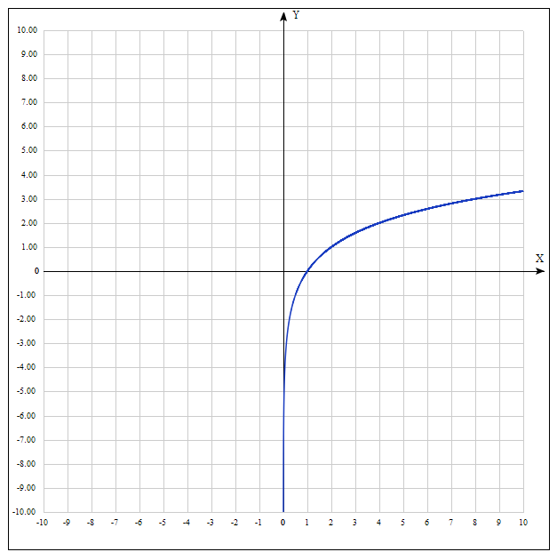

Логарифмические функции
Определение логарифма
Логарифм по основанию a от аргумента x — это степень, в которую надо возвести число a, чтобы получить число x.
Обозначение: logax = b, где a — основание, x — аргумент, b — собственно, чему равен логарифм.
Операцию нахождения логарифма числа по заданному основанию называют логарифмированием.
| 21 | 22 | 23 | 24 | 25 | 26 |
| 2 | 4 | 8 | 16 | 32 | 64 |
| log2 2 = 1 | log2 4 = 2 | log2 8 = 3 | log2 16 = 4 | log2 32 = 5 | log2 64 = 6 |
Логарифмитическая функция и ее график
Логарифмической функцией называется функция вида y = logax, где a > 0 и a ≠ 1.
График функции имеет следующий вид:
Свойства функции
Рассмотрим свойства функции:
- Областью определения функции является множество всех положительных чисел D(y) = (0; +∞);
- Множеством значений функции являются все действительные числа R;
- Наименьшего и наибольшего значений функция не имеет;
- Функция не является ни нечетной, ни четной. Имеет общий вид;
- Функция непереодическая;
- Нули функции: функция пересекает координатную ось Ox в точке (1; 0);
- При a > 1 функция возрастает, при 0 < a < 1 функция убывает.